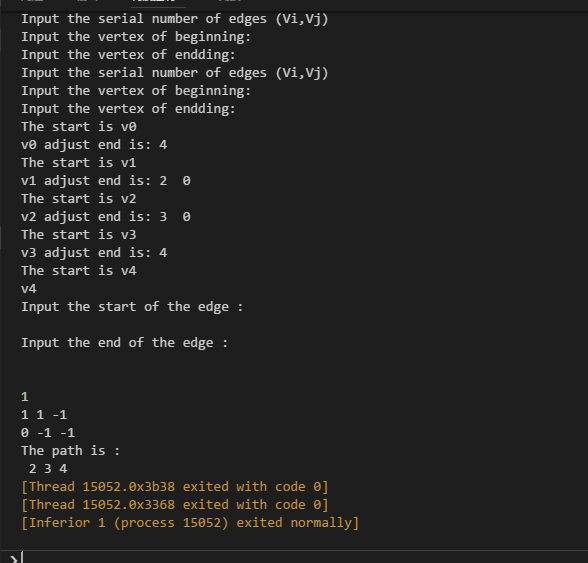
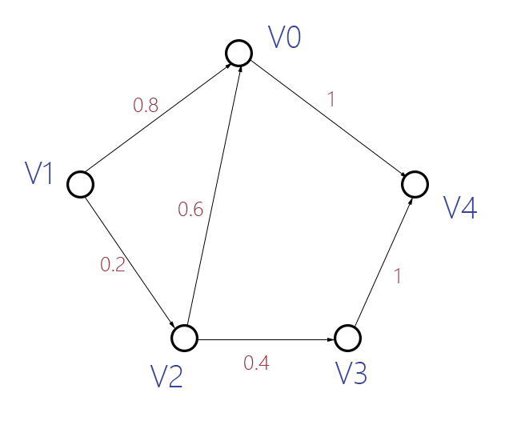
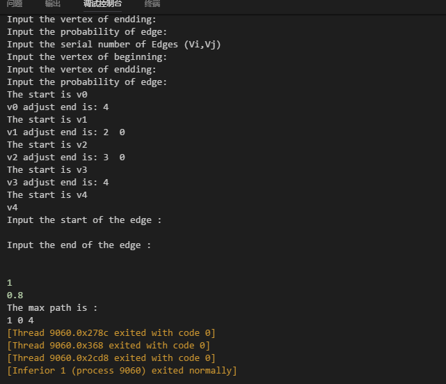

我们可以通过在有向图G = ( V , E ) G=(V,E) G = ( V , E ) ( u , v ) ∈ { E } (u, v) \in \{E\} ( u , v ) ∈ { E } σ ( u , v ) \sigma (u,v) σ ( u , v ) ∑ \sum ∑ v 0 ∈ V v_0 \in V v 0 ∈ V
对给定的带标签的图G G G v 0 v_0 v 0 ∑ \sum ∑ σ = { σ 1 , σ 2 , σ 3 , ⋯ , σ k } \sigma=\{\sigma _1,\sigma _2,\sigma_3, \cdots, \sigma_k\} σ = { σ 1 , σ 2 , σ 3 , ⋯ , σ k } G G G V 0 V_0 V 0 s s s
1 2 3 4 5 6 7 8 9 10 11 12 13 14 15 16 17 18 19 20 21 22 23 24 25 26 27 28 29 30 31 32 33 34 35 36 37 38 39 40 41 42 43 44 45 46 47 48 49 50 51 52 53 54 55 56 57 58 59 60 61 62 63 64 65 66 67 68 69 70 71 72 73 74 75 76 77 78 79 using namespace std; enum color{WHITE,GRAY,BLACK}; enum which_edge{NONE,TREE,BACK,FORWARD,CROSS}; typedef int status; typedef string VertexType; typedef int EdgeType; typedef struct EdgeNode { int Edgestart; int Edgeend; //邻接点域，储存该顶点对应的下标 EdgeType weight; //用于存储权值 int type ; struct EdgeNode *next; //下一个邻接点 }EdgeNode; typedef struct VertexNode //顶点表结点 { VertexType data; //顶点域，存储顶点信息 int color; int touch,finish; //访问开始时间和结束时间 EdgeNode* FirstEdge; //边表头指针 int parent; //指向遍历的父结点 }VertexNode,AdjList[MAXVEX]; typedef struct { AdjList adjList; //图的顶点表 int numNodes,numEdges; }GraphAdjList; void CreateALGraph(GraphAdjList *G) { EdgeNode *e; cout<<"Input the number of vertexes and edges: " <<endl; cin>>G->numNodes>>G->numEdges; //输入顶点表的信息 for(int i=0;i<G->numNodes;i++) { cout<<"Input the data (information) of vertexes "<<i+1<<endl ; cin>>G->adjList[i].data; G->adjList[i].FirstEdge=NULL; G->adjList[i].parent=-1; G->adjList[i].color=WHITE; G->adjList[i].touch=G->adjList[i].finish=-1; } int beg,end; for (int k=0;k<G->numEdges;k++) { cout<<"Input the serial number of edges (Vi,Vj) " <<endl; cout<<"Input the vertex of beginning: "; cin>>beg; cout<<"Input the vertex of endding: "; cin>>end; e=(EdgeNode *)malloc(sizeof(EdgeNode)); e->Edgeend=end; e->Edgestart=beg; e->weight=0; e->type=NONE; e->next=G->adjList[beg].FirstEdge; G->adjList[beg].FirstEdge=e; } }
1 2 3 4 5 6 7 8 9 10 11 12 13 14 15 16 17 18 19 20 21 22 23 24 25 26 27 28 29 30 31 32 33 34 35 36 37 38 39 40 41 42 43 44 45 46 47 48 49 50 51 52 53 54 55 56 57 58 59 60 61 62 63 64 65 66 67 68 69 70 71 72 73 74 75 76 77 78 79 80 81 82 83 84 85 86 87 88 89 90 91 92 93 94 95 96 97 98 99 100 101 102 103 int path_time=0; int path_exist=0; int path_print_signal=0; void print_graph(GraphAdjList *G) { EdgeNode *cur_edge; for (int i=0;i<G->numNodes;i++) { cout<<"The start is " <<G->adjList[i].data<<endl; cout<<G ->adjList[i].data; if (G->adjList[i].FirstEdge) cout<<" adjust end is: " ; for (cur_edge=G->adjList[i].FirstEdge;cur_edge;cur_edge=cur_edge->next) { cout<<cur_edge->Edgeend<<" "; } cout<<endl; } } void DFS_visit(GraphAdjList *G,int start,int end) { G->adjList[start].color=GRAY; path_time++; G->adjList[start].touch=path_time; for(EdgeNode *cur_e=G->adjList[start].FirstEdge;cur_e;cur_e=cur_e->next) { if(cur_e->Edgeend==end) { path_exist=1; } if(path_exist==1) return; int cur_end=cur_e->Edgeend; if(G->adjList[cur_end].color==WHITE) { G->adjList->parent=start; DFS_visit(G,cur_end,end); cur_e->type=TREE; } else if(G->adjList[cur_end].color==GRAY) { cur_e->type=BACK; } else if(G->adjList[cur_end].color==BLACK) { if(G->adjList[start].touch<G->adjList[end].touch) cur_e->type=FORWARD; else cur_e->type=CROSS; } } //G->adjList[start] has finished G->adjList[start].color=BLACK; path_time++; G->adjList[start].finish=path_time; } void DFS(GraphAdjList *G,int start,int end) { for(int u=0;u<G->numNodes;u++) { G->adjList[u].color=WHITE; G->adjList[u].parent=-1; } path_time=0; if(G->adjList[start].color==WHITE) DFS_visit(G,start,end); } void path_print(GraphAdjList *G,int start,int end) { if(path_exist==1) { cout<<" "<<start; for(EdgeNode *e_ptr=G->adjList[start].FirstEdge;e_ptr;e_ptr=e_ptr->next) { if(e_ptr->Edgeend==end) { cout<<" "<<end; path_print_signal=1; return; } } if(path_print_signal==0) { for(EdgeNode *e_ptr=G->adjList[start].FirstEdge;e_ptr;e_ptr=e_ptr->next) { if(e_ptr->type==TREE) path_print(G,e_ptr->Edgeend,end); } } } else { cout<<"The path is not exist"<<endl; } }
1 2 3 4 5 6 7 8 9 10 11 12 13 14 15 16 17 18 19 20 21 22 23 24 25 26 int main() { GraphAdjList G; CreateALGraph(&G); print_graph(&G); int start,end; cout<<"Input the start of the edge : " <<endl; cin>>start; cout<<"Input the end of the edge : "<<endl ; cin>>end; DFS(&G,start,end); cout<<endl; cout<<path_exist<<endl ; cout<<G.adjList[start].color<<" "<<G .adjList[start].touch<<" " <<G.adjList[start].finish<<" "<<endl; cout<<G .adjList[end].color<<" " <<G.adjList[end].touch<<" "<<G .adjList[end].finish<<" " <<endl; cout<<"The path is :"<<endl ; path_print(&G,start,end); return 0; }

假定每条边( u , v ) ∈ E (u,v) \in E ( u , v ) ∈ E p ( u , v ) p(u,v) p ( u , v ) u u u ( u , v ) (u,v) ( u , v )
一条路径上的概率定义为路径上所有边的概率之积。

可以看出：从v 1 v_1 v 1 v 4 v_4 v 4 0.8 × 1 = 0.8 0.8 \times 1=0.8 0 . 8 × 1 = 0 . 8
动态规划能够实现的状态转移函数如下：
1 2 3 4 5 6 7 answer=e->probability*DFS_compute(G,e->e_end,end); //计算从G->adjlist[beg]出发的每一条边，找出最大值 if (answer>G->adjlist[beg].res){ G->adjlist[beg].res=answer; G->adjlist[beg].direction=e->e_end; }
1 2 3 4 5 6 7 8 9 10 11 12 13 14 15 16 17 18 19 20 21 22 23 24 25 26 27 28 29 30 31 32 33 34 35 36 37 38 39 40 41 42 43 44 45 46 47 48 49 50 51 52 53 54 55 56 57 58 59 60 61 62 63 64 65 66 67 68 69 70 71 72 73 74 75 76 77 78 79 using namespace std; typedef int status; typedef string VertexType; typedef double EdgeType; typedef struct Edge { int e_start; int e_end; //邻接点域 EdgeType probability; //用于存储权值，即边的概率 struct Edge *next; }Edge; typedef struct Vertex { VertexType data; Edge* head; //边表头指针 int direction; //用于指明节点下一步该往哪里走 double res; //用于储存最后的结果，初始化为-1 //direction和res要联动 }Vertex,adjvertex[MAXVEX]; typedef struct { adjvertex adjlist; //图的顶点表 int numNodes,numEdges; }GraphAdj; void CreateGraph(GraphAdj *G) { Edge *e; cout<<"Input the number of vertexes and edges: " <<endl; cin>>G->numNodes>>G->numEdges; //输入顶点表信息 for(int i=0;i<G->numNodes;i++) { cout<<"Input the data (information) of vertexes "<<i+1<<endl ; cin>>G->adjlist[i].data; G->adjlist[i].head=NULL; G->adjlist[i].direction=-1; G->adjlist[i].res=-1; } int beg,end; double prob; for (int k=0;k<G->numEdges;k++) { cout<<"Input the serial number of Edges (Vi,Vj) " <<endl; cout<<"Input the vertex of beginning: "; cin>>beg; cout<<"Input the vertex of endding: "; cin>>end; cout<<"Input the probability of edge: "; cin>>prob; e=(Edge *)malloc(sizeof(Edge)); e->e_start=beg; e->e_end=end; e->probability=prob; e->next=G->adjlist[beg].head; G->adjlist[beg].head=e; } }
1 2 3 4 5 6 7 8 9 10 11 12 13 14 15 16 17 18 19 20 21 22 23 24 25 26 27 28 29 30 31 32 33 34 35 36 37 38 39 40 41 42 43 44 45 46 47 48 49 50 51 52 53 54 55 56 57 58 59 60 61 62 63 64 65 66 67 68 69 70 71 72 73 74 75 76 77 78 79 80 81 82 83 84 double answer=1; double maxpath=0; int path_exist=0; int path_print_signal=0; int has_founded[MAXVEX]; double DFS_compute(GraphAdj *G,int beg,int end); double max(double a,double b) { return a>b?a:b; } double DFSTraverse(GraphAdj *G,int beg,int end) { for (int i=0;i<G->numNodes;i++) has_founded[i]=0; maxpath=DFS_compute(G,beg,end); return maxpath; } double DFS_compute(GraphAdj *G,int beg,int end) { if (beg==end) { answer=1; return 1; } for (Edge *e=G->adjlist[beg].head;e;e=e->next) { if (has_founded[beg]==1) { answer=G->adjlist[e->e_start].res; return G->adjlist[e->e_start].res; } if (has_founded[beg]==0) { if (e->e_end==end) { path_exist=1; answer=e->probability; if (answer>G->adjlist[e->e_start].res) { G->adjlist[e->e_start].res=answer; G->adjlist[e->e_start].direction=e->e_end; } return G->adjlist[e->e_start].res; } answer=e->probability*DFS_compute(G,e->e_end,end); //计算从G->adjlist[beg]出发的每一条边，找出最大值 if (answer>G->adjlist[beg].res) { G->adjlist[beg].res=answer; G->adjlist[beg].direction=e->e_end; } } } //beg开始的answer已经全部计算完了 has_founded[beg]=1; return G->adjlist[beg].res; } void print_graph(GraphAdj *G) { Edge *cur_edge; for (int i=0;i<G->numNodes;i++) { cout<<"The start is " <<G->adjlist[i].data<<endl; cout<<G ->adjlist[i].data; if (G->adjlist[i].head) cout<<" adjust end is: " ; for (cur_edge=G->adjlist[i].head;cur_edge;cur_edge=cur_edge->next) { cout<<cur_edge->e_end<<" "; } cout<<endl; } }
1 2 3 4 5 6 7 8 9 10 11 12 13 14 15 16 17 18 19 20 21 22 23 24 25 26 27 28 29 30 31 32 33 34 35 int main() { GraphAdj G; CreateGraph(&G); print_graph(&G); int start,end; cout<<"Input the start of the edge : " <<endl; cin>>start; cout<<"Input the end of the edge : "<<endl ; cin>>end; double result=DFSTraverse(&G,start,end); cout<<endl; cout<<path_exist<<endl ; cout<<result<<endl; cout<<"The max path is : "<<endl; cout<<start<<" "; if(path_exist==1) { int pathID=G.adjlist[start].direction; while(pathID!=end) { cout<<pathID<<" "; pathID=G.adjlist[pathID].direction; } cout<<end; } return 0; }

 微信
微信 支付宝
支付宝